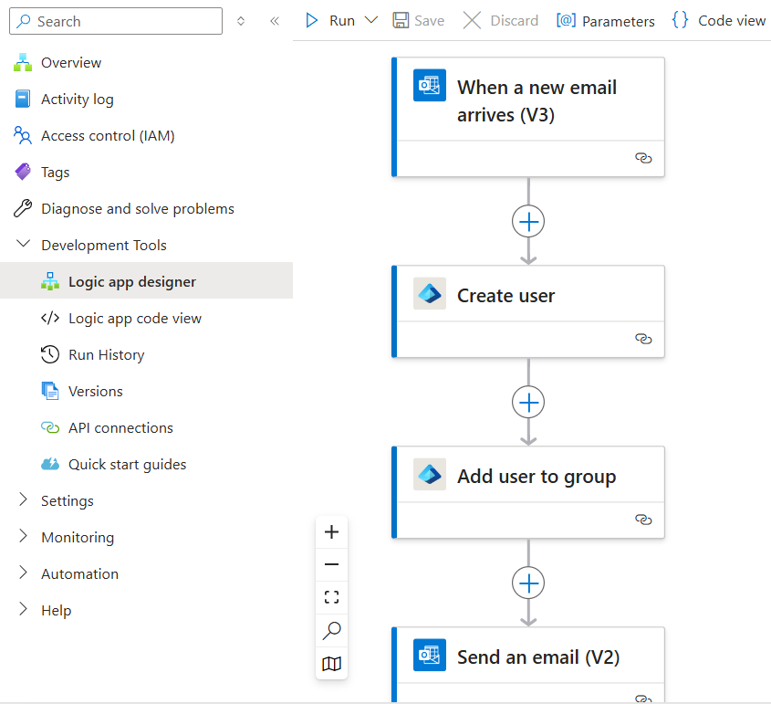

Automated Employee Onboarding Using Azure
Designed and implemented an automated employee onboarding process
using Azure Logic Apps, showcasing my ability to
integrate multiple Azure services for streamlined operations.
The workflow is triggered when a new onboarding request is sent via
email with the subject of "New Hire (Employee ID)". This will then
automatically do the following:
-
Create a user account in
Microsoft Entra ID (Azure AD)
- Assign the relevant roles and permissions
- Check for errors and re-assign if applicable
-
Send a customized welcome email to the new employee with their
credentials
-
Send a confirmation email to HR confirming the account has been
successfully created

Automated onboarding workflow in Azure Logic Apps
Key Highlights:
-
🚀 **Automation Trigger**: Detects onboarding requests via email
subject.
-
👥 **User Creation**: Creates user account in Entra ID (Azure AD)
automatically.
-
🔑 **Role Assignment**: Assigns roles/groups based on job functions.
-
⚠️ **Error Monitoring**: Implements error handling and monitoring
for reliability.
-
🔒 **Security Focus**: Dynamically generates secure passwords.
Challenges Faced:
-
🔄 **Data Mapping**: Challenging mapping of dynamic email fields to
Azure AD properties.
-
⚙️ **Error Handling**: Setting up effective handling for multi-point
errors was tough.
-
🔄 **Permissions Management**: Complex role/group assignments based
on job titles.
Areas for Improvement:
-
🔔 **Error Notifications**: Integrate Teams/SMS for quicker issue
responses.
-
🔒 **Security Measures**: Use Azure Key Vault for sensitive data
management.
-
📈 **Scalability**: Optimise for higher onboarding request volumes.
-
🔗 **HR Integration**: Link directly with systems like Workday or
SAP SuccessFactors.
-
🔄 **User Feedback**: Collect feedback for ongoing improvements.
Skills Demonstrated:
- ✅ **Azure Logic Apps**: Designing automated workflows.
-
✅ **Entra ID (Azure Active Directory)**: Automating user management
and access control.
-
✅ **Error Handling**: Implementing robust error handling
techniques.
- ✅ **Security Practices**: Enhancing security in workflows.
-
✅ **Monitoring**: Using Azure tools for performance tracking.